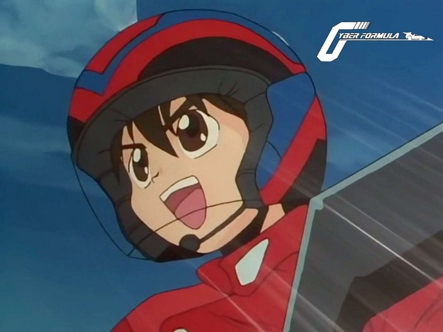

Bienvenue sur le site de la Nobluesky Fansub!
Annonces
Future GPX Cyber Formula 05 vostfr
Bonjour!
Voici l'épisode 5 de Future GPX Cyber Formula.
Notre équipe préférée s'en va vers le Grand Prix National. Mais la route leur réserve quelques surprises...
Bon épisode et à la prochaine!
Future GPX Cyber Formula 04 vostfr

Salut à tous!
J'espère que la rentrée s'est bien passée pour vous si vous étudiez encore comme moi, sinon je vous souhaite de bien débuter l'année au boulot, c'est la moindre des choses.
Trève de parlotte, ce que vous souhaitez n'est pas de parler travail mais de vous changer les idées non?!
Sinon vous ne seriez pas là, à venir dans l'antre de Nobluesky!!
Voici donc la suite de la course de Fujioka : c'est la course finale, qui fait suite au contre-la-montre miraculeusement réussi par Hayato. Mais la nature de cette course est différente...
Future GPX Cyber Formula 03 vostfr
Bonjour à tous!
Vous allez vous en apercevoir au fil du temps, je ne suis pas un newseur très inspiré alors je préfère faire court que de raconter ma vie! J'espère que vous ne m'en voudrez pas ^_^
Dans ce troisième épisode, nous assistons à la fin des qualifications de Fujioka. Hayato arrivera-t-il à se qualifier sans expérience de pilote? Ses compétences ne sont pas forcément celles qu'il pense être utiles...
Edit : Version corrigée, quelques erreurs s'étaient glissées dans l'episode.
Future GPX Cyber Formula 02 vostfr
Et voici le deuxième épisode de Future GPX Cyber Formula!
Hayato a bien réussi à amener l'Asurada à bon port, mais le pilote officiel ne peut la conduire à cause du système d'identification. L'informaticien du groupe va tenter de résoudre le problème.
L'équipe est en danger et va devoir discuter sérieusement! Qui va piloter l'Asurada...
Future GPX Cyber Formula 01 vostfr

Mais quel animé choisir en ce moment? Telle est la question. Ou plutôt était car je vous présente dès maintenant le premier épisode de mon nouveau projet, Future GPX Cyber Formula.
Il s'agit d'une vieille série datant de 1991, avec son charme de l'époque et ses personnages au dessin daté et à la candeur parfois trop grande et avec des vrais méchants pas gentils, mais c'est pour le plus grand plaisir des amateurs de vintage que je vous propose sa sortie en vostfr.
Nous voilà en 2015^^ durant les préliminaires d'une course de Cyber Formule...